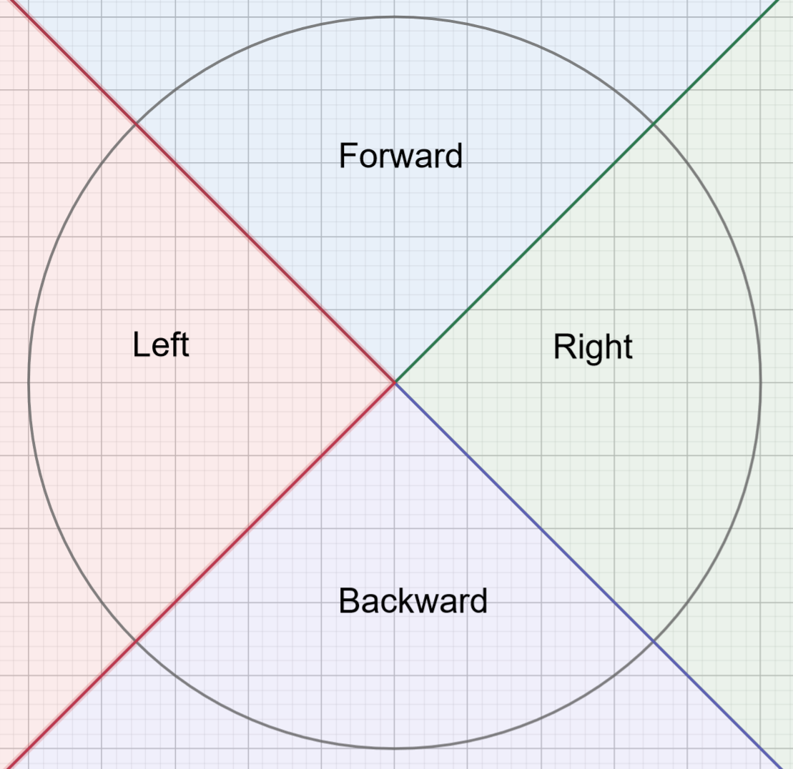
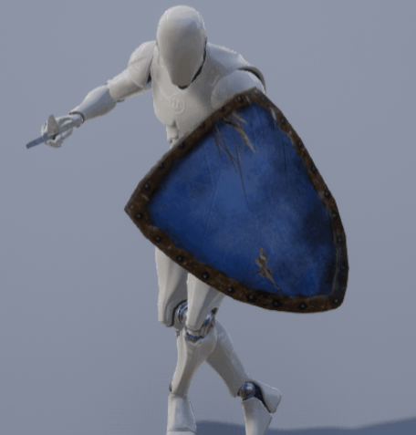
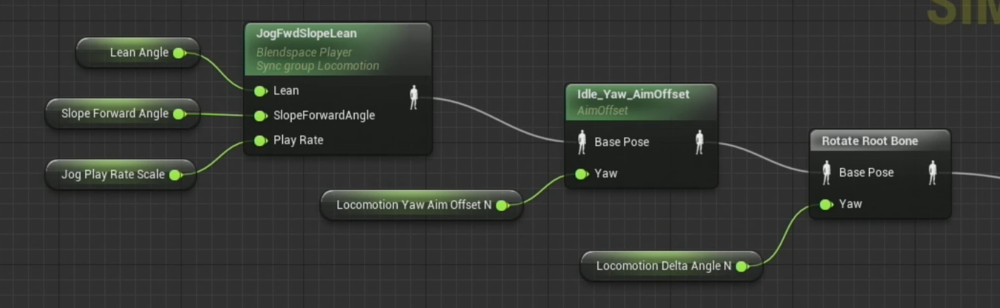
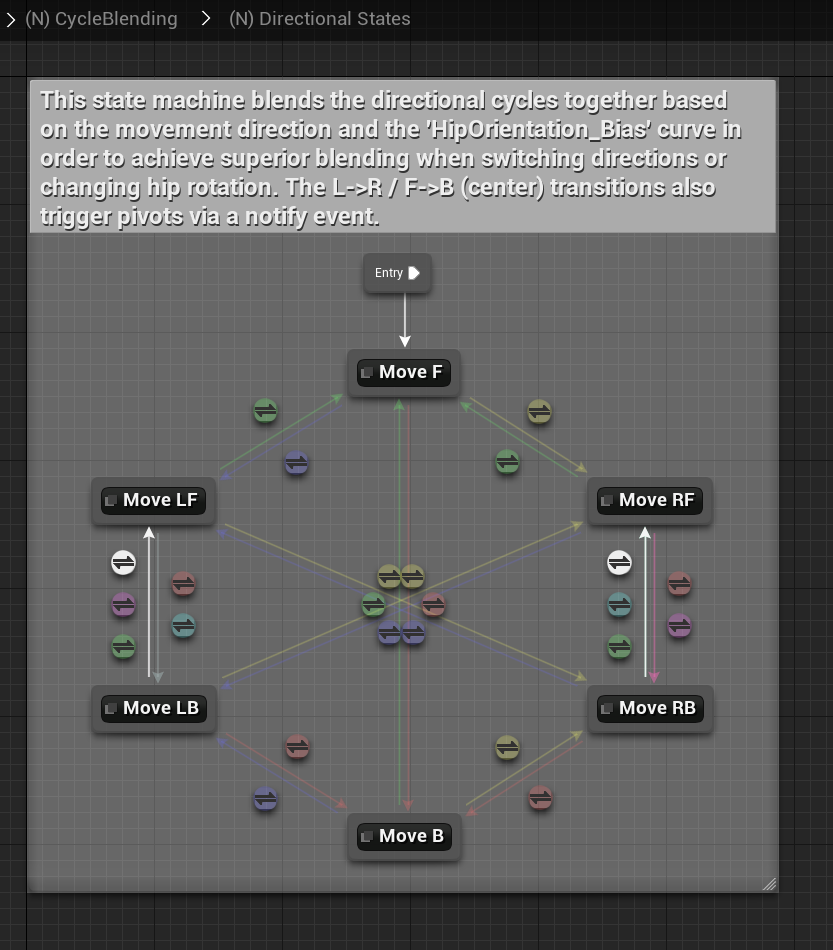
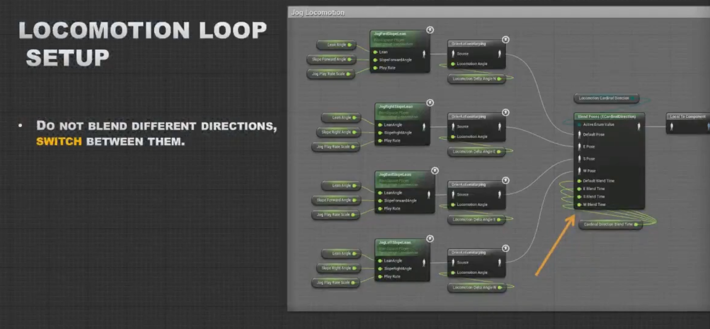
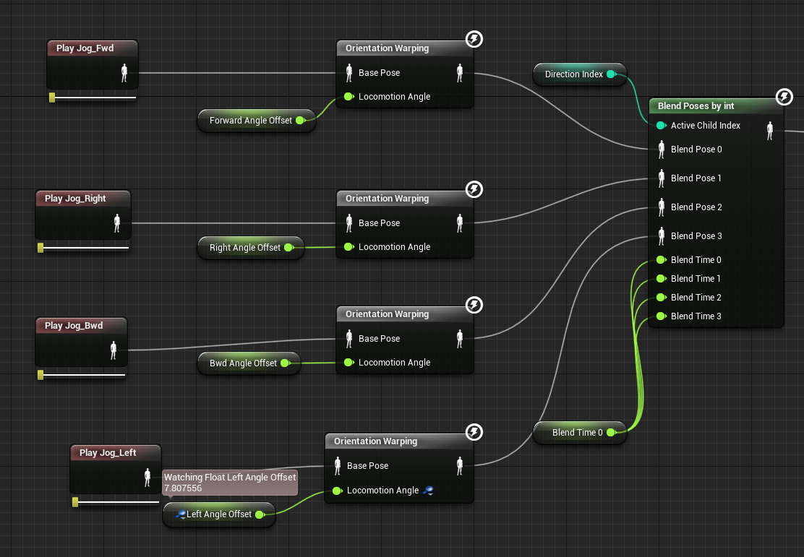

Introduction
Orientation warping is an animation technique that is used in Paragon. You can find more information about it here.
There are already a bunch of implementation methods provided by Epic or SeanChen. None of them really suits our project, though. And I’ve eventually implemented orientation warping in a brand new way, which works brilliantly in our project.
About Orientation Warping
You may wonder what on earth orientation warping is or why and when I should use this feature.
There are two types of locomotion style: forward move and sideway move(aka. strafe move). Orientation warping is typically used for sideway move, which means that the character aims forward while moving in all directions. You can find more information about it here).
A Naive Strafe Move Implementation
A naive but common implementation is simply applying a looping animation sequence for a certain range of moving directions:

Straightforward but effective. The main problem is that it always causes foot-sliding. To my surprise, I can still find it in some so-called modern games(yes, I mean Nioh 2):

Blending: Another Naive Strafe Move Method
It naturally comes to my mind that I can use a 2-D Blend Space in UE4, or Blend tree in Unity to achieve this feature.
And I have to admit, sometimes this method works pretty nice. But strange pose can still be found since it’s hard to control animation blending:

As can be seen from the image above, character legs get crossed with each other for some certain input:

This issue is even worse for stylized character because animation resource can vary dramatically in different moving directions.
What Is Orientation Warping?
Orientation warping solves this problem once and for all.
The main idea of this method is rotating the whole character first, so that foot-sliding is prevented. And then rotating the upper body to the front.
In this case, I can get a controllable and non foot-sliding character strafing pose.

In addition, orientation warping requires far less anim resources. In Paragon, only 4-direction anim resources are required to produce a pretty nice locomotion effect.
Three Imperfect Implementation Methods
Blend Space + Aim Offset + Rotate Root Bone
An earlier implementation method proposed by Laurent Delayen can be found here.
And it seems that Paragon simply use a blend space that handles one direction, an AimOffset node that reverse-rotates the upper body, and a rotate root bone node to prevent foot-sliding as well as rotate upper body back to forward:

This works, in price of a complex anim graph structure and many aim offset resources.
Moreover, this implementation has bad performance since an AimOffset node is expensive!
State-Machine Based Orientation Warping
This implementation method can be found in Advanced Locomotion System V4:

Since this is a free project that is available on Unreal Marketplace. You can download this project and play with it. And I am pretty sure that most of you can be overwhelmed by its complexity. And btw, I hate Animation Layers.
The performance can also be a big issue. So it would be a better choice to considered this project as reference only.
Orientation Warping Anim Node
This should be the most well-known orientation warping implementation method. For more information, check this out.

And SeanChen has already shared his or her implementation on Unreal Marketplace. You can play with these anim nodes and use them in your project.
Actually I’ve tried this method in our project at the very beginning. I’ve encountered several severe problems and as a result,I decided to implement our own orientation warping implementation method, which I will talk about later.
But it is much more valuable, in my opinion, to share those problems I just encountered using this method.
Switch Direction Pose Problem
It looks nice in general. But sometimes it looks not smooth enough when switching from one direction to another direction.

The Anim Graph looks like:

When active child index changes, animation blending can still happen. And moreover, a Blend List node looks bad when blending interruption happens. You can use Inertialization transition type to ease this problem(well, sometimes this problem can be aggravated).
This problem can be eased even more if sync marker is properly used. But frankly speaking, it is hard to manage sync marker, especially when a blend-space is involved with sync groups.
Our Final Solution
It turned out that our animators loves how animation sequence play rate is handled inside a single blend space. It is smooth enough so that switching direction looks wonderful!
And we’ve integrate the bone modification feature into a BlendSpacePlayer. To be more specific, we can rewrite UBlendSpaceBase::GetAnimationPose function.
Since it is not possible for me to paste any relevant code here because of secrecy. But I believe that is simply enough–All you need to do is applying orientation warping to each sample pose, and then blend those poses together.
This method works perfectly! And eventually this method is adopted in our project!
It’s a pity that I cannot share more details(maybe later?). Go for Apex Legends Mobile now and check how this looks like!